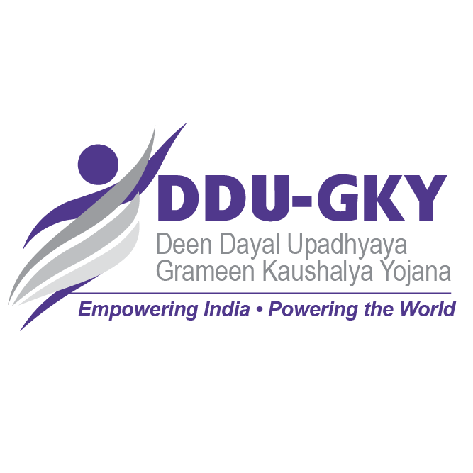
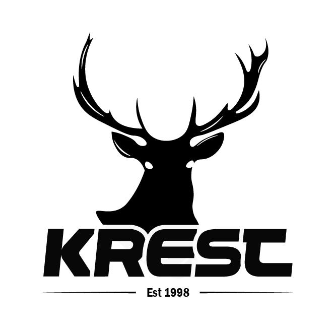
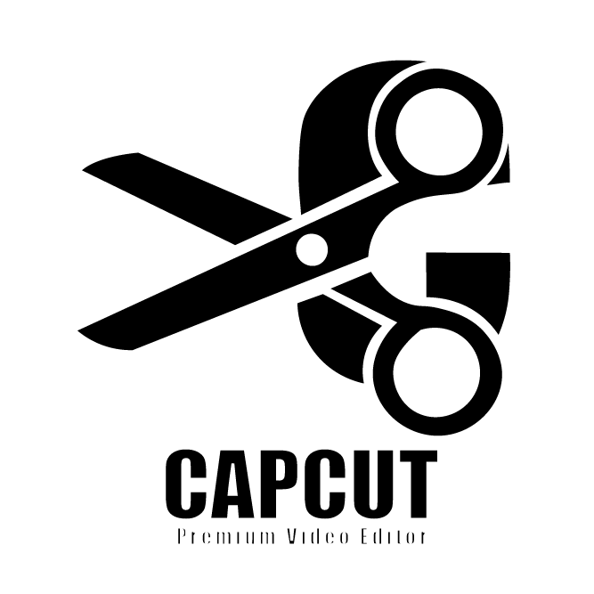

Zylora Beauty – Handcrafted Logo Design
Designed from a hand-drawn concept and refined into a professional vector logo using Adobe Illustrator, representing elegance, beauty, and sophistication.
Sumeru Global Solutions – Vector Recreation
A clean vector recreation of the company's logo, carefully traced and refined in Adobe Illustrator while preserving brand consistency and visual impact
Kudumbashree – Logo Recreation
A vector-based recreation of the Kudumbashree logo, focusing on precision, scalability, and maintaining the original brand identity.

DDU-GKY – Brand Logo Recreation
Digitally recreated using Adobe Illustrator with attention to detail, ensuring a sharp and scalable version of the official program logo.

Krest – Sports Brand Logo Design
A bold and modern logo concept featuring a deer silhouette, designed to convey strength, performance, and premium brand identity.

CapCut Inspired Logo Concept
A self-created logo concept developed in Adobe Illustrator, combining modern iconography and bold typography to create a distinctive visual identity for a video editing brand.